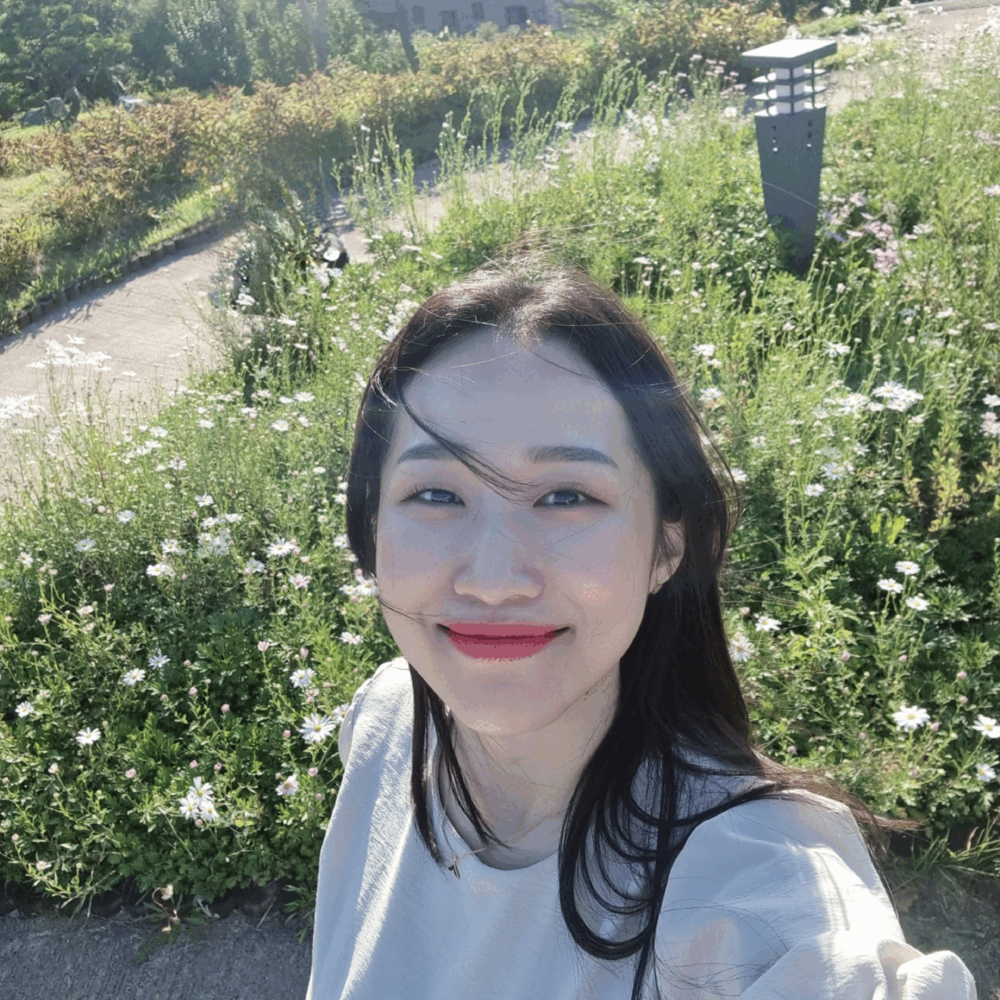

Figma
와이어프레임부터 UI 설계와 프로토타입까지 화면의 흐름을 구체화했습니다.
문제를 구조화하고,
화면으로 해결합니다.
와이어프레임부터 UI 설계와 프로토타입까지 화면의 흐름을 구체화했습니다.
스크롤·슬라이드·호버 인터랙션을 구현하며 동작하는 화면을 제작했습니다.
아이디어 구체화와 레퍼런스 탐색, 초기 코딩 보조에 활용했습니다.
ABOUT · HOW I WORK

사용자가 무엇을 이해하고 행동해야 하는지 먼저 생각합니다. 실제 프로젝트의 역할과 결과로 경험을 설명합니다.
SELECTED PROJECTS · 2026
담당 역할과 문제 해결 과정, 결과만 명확하게 정리했습니다.
향의 분위기를 스크롤 경험으로 전달한 중성적 향수 브랜드 웹사이트입니다.
MY ROLE · 나의 역할
온라인에서 향과 브랜드 감정을 직접 전달하기 어려웠습니다.
상품 정보 중심 화면만으로 분위기를 표현하기 부족했습니다.
도시·새벽·고요함을 이미지와 스크롤 인터랙션으로 시각화했습니다.
브랜드 콘셉트가 일관된 웹사이트를 구현했습니다.
어려운 반도체 기술을 명확한 정보 구조로 전달한 기업 웹사이트입니다.
MY ROLE · 나의 역할
비전문 사용자가 반도체 기업의 핵심 가치를 이해하기 어려웠습니다.
기술과 회사 정보의 우선순위가 부족했습니다.
정보 우선순위를 정리하고 와이어프레임부터 반응형 UI까지 제작했습니다.
기술을 단계적으로 탐색할 수 있는 개인 프로젝트를 완성했습니다.
코딩 초급자의 학습과 실습을 한 흐름으로 연결한 웹 서비스입니다.
MY ROLE · 나의 역할
학습·검색·실습이 여러 사이트로 나뉘어 흐름이 끊겼습니다.
개념 설명과 실제 화면 구현이 연결되지 않았습니다.
웹 빌더·용어 사전·실습·레퍼런스를 하나의 흐름으로 묶었습니다.
React 기반 학습 서비스를 팀 결과물로 구현했습니다.